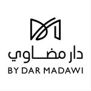
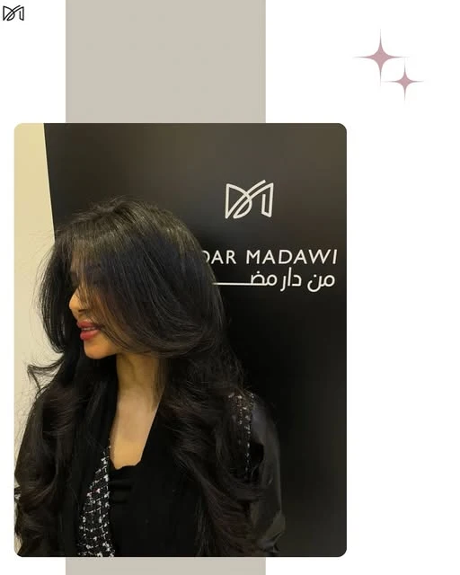

دار مضاوي
لكل مناسبة،
إطلالتها.
من التصفيف والصبغات إلى المكياج وتجهيز العروس، تضم دار مضاوي خيارات متنوعة للعناية والإطلالات. شاهدي الصور المنشورة، واستعرضي الخدمات قبل التواصل أو متابعة الحجز.
تعرّف على الموقع
دار مضاويDar Madawiاحجزي موعدك
الرياض، حي الملك سلمان
شعر، مكياج، وعناية للمناسبات والأيام الجميلة في دار مضاوي بالرياض.
على ذوقك
خدمات مختلفة، ومساحة تختار فيها ما يناسبك.
الصور والأعمال
صور من الحساب العام وصفحة المنشأة؛ اضغط على أي صورة لعرضها كاملة.
دار مضاوي
من التصفيف والصبغات إلى المكياج وتجهيز العروس، تضم دار مضاوي خيارات متنوعة للعناية والإطلالات. شاهدي الصور المنشورة، واستعرضي الخدمات قبل التواصل أو متابعة الحجز.
تعرّف على الموقعخطّط لزيارتك
اختر ما يناسبك، ثم راجع اختياراتك قبل الانتقال إلى الحجز.
قائمة منشورة على Fresha بتاريخ ٢١ سبتمبر ٢٠٢٦. قد تختلف الأسعار حسب الخيارات والعروض؛ السعر والموعد النهائيان على منصة الحجز.
يسعدنا اللقاء
Dar Madawi Salon, Turki Ibn Ahmad Al Sudairi, King Salman Neighborhood, Riyadh, Riyadh Province
+966 55 877 8887دار مضاوي